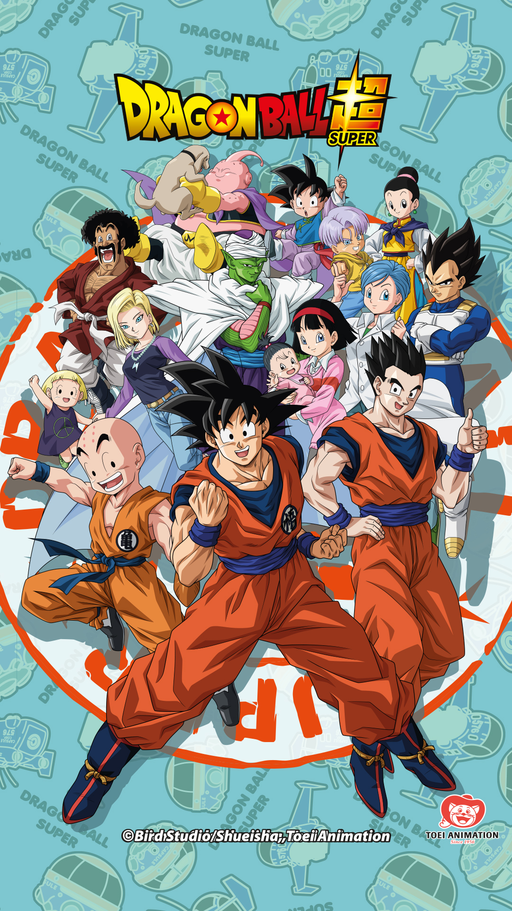
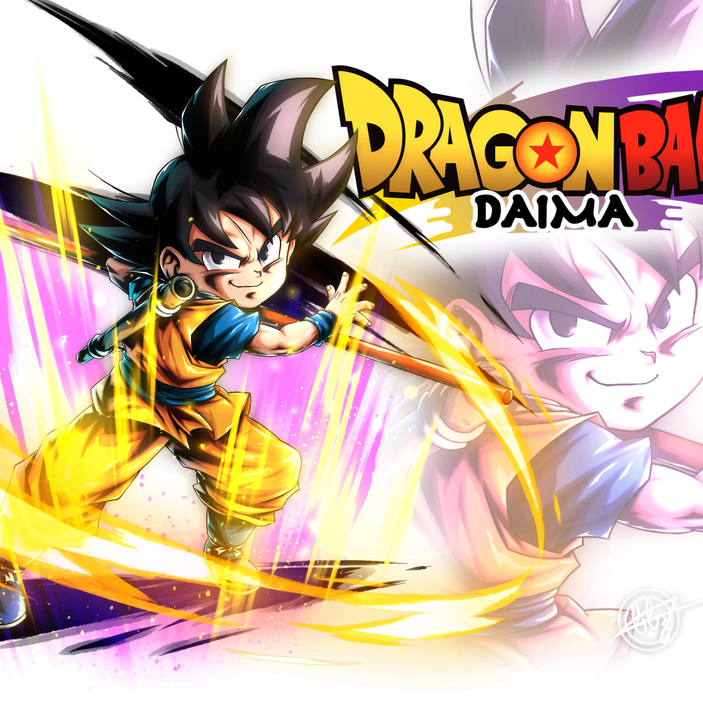
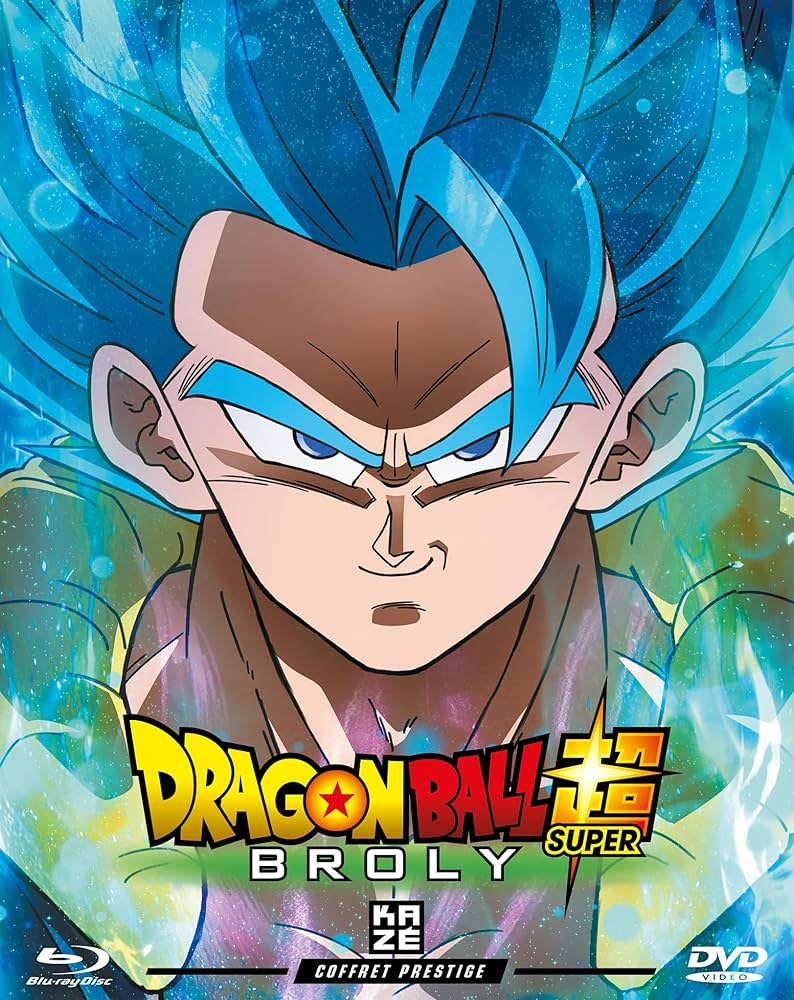
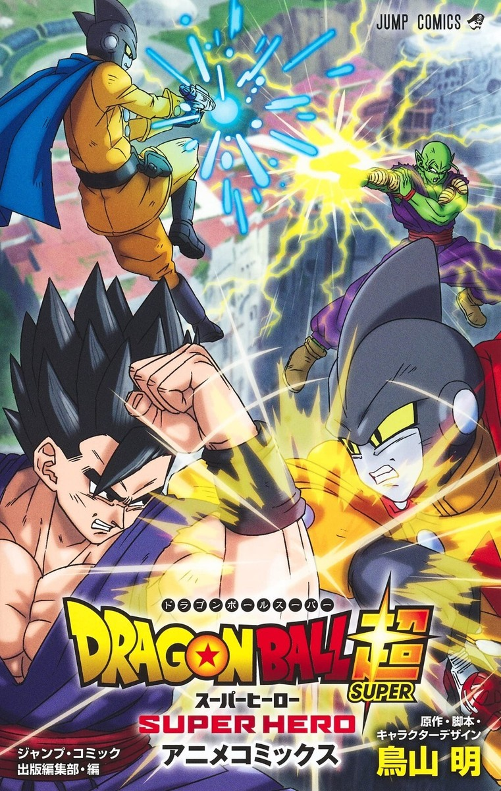
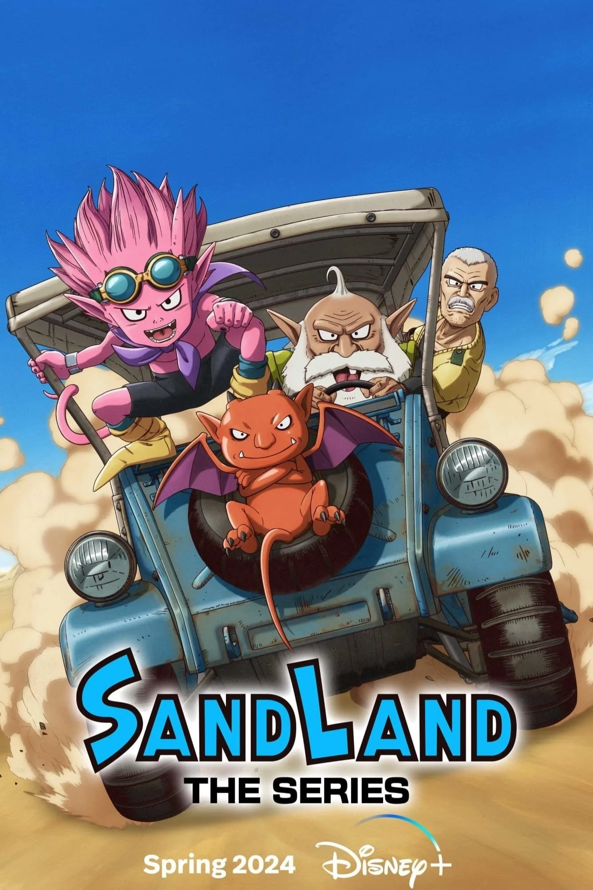
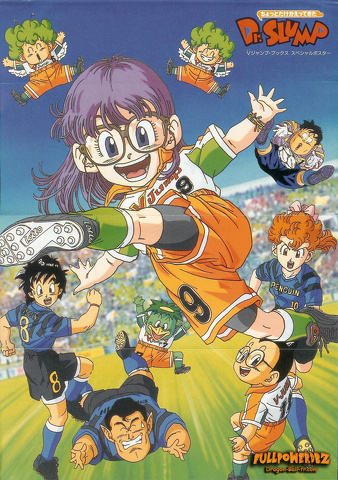
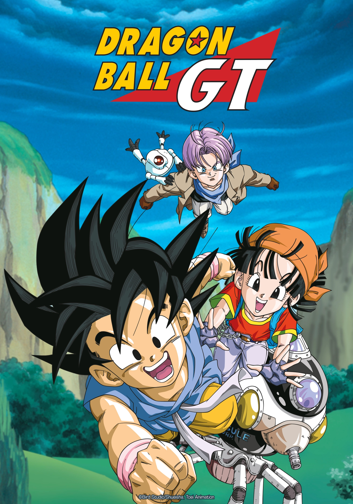

DE L'ENCRE A L'ECRAN
L'univers d'Akira Toriyama ne s'est pas limité aux pages noir et blanches. Ses œuvres ont donné naissance à certaines des séries animées les plus populaires de tous les temps. Attention cependant : toutes les adaptations ne se valent pas ! Voici le guide pour naviguer entre les séries cultes, les films supervisés par le maître, et les projets... plus discutables.
L'Histoire Canonique
-

L'Origine : Dragon Ball
Le pitch : La genèse de Goku et la découverte du monde.
Pourquoi regarder : Pour l'aventure et l'humour pur. C'est la fondation.
Visionner -

L'Apogée : Dragon Ball Z (ou Kai)
Le pitch : L'action explose. Saiyans, Freezer, Cell, Buu.
Conseil : Préférez la version Dragon Ball Kai pour un rythme moderne, HD et sans longueurs.
Visionner -

La Suite : Dragon Ball Super
Le pitch : Goku atteint le niveau des Dieux.
Conseil : Regardez les films Battle of Gods et Resurrection F avant d'attaquer la série.
Visionner -

L'Épilogue : Dragon Ball Daima
Le pitch : La dernière aventure écrite par Toriyama (2024).
Conseil : À voir pour la beauté de l'animation.
Visionner
Les Films "Histoire Officielle"
-

-

Dragon Ball Super, Super Hero
Une aventure en 3D/CGI mettant Gohan et Piccolo à l'honneur.
Visionner -

Sand Land (La Série)
C'est quoi ? Un road-trip dans le désert avec un démon et un shérif.
Pourquoi c'est bien : L'adaptation la plus fidèle techniquement. Une histoire courte (1 saison), drôle et touchante. Idéal si on n'aime pas les séries à rallonge.
Visionner -

Dr. Slump (L'Anime)
C'est quoi ? Les gags absurdes d'Arale au Village Pingouin.
Pourquoi c'est bien : Pour découvrir l'humour "non-sens" de Toriyama avant qu'il ne fasse de la baston.
Visionner
Pour passer le temps
-

Dragon Ball GT :
La suite non-officielle des années 90. Intéressante pour son design (SSJ4) et sa fin émouvante, mais difficile à regarder pour son scénario.
Visionner -

Dragonball Evolution :
Le film Live Action américain. À éviter absolument, sauf pour une soirée "nanar" entre amis pour rigoler.
Visionner